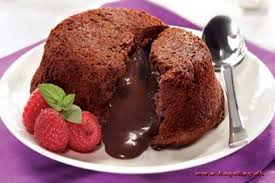

jeg kan godt lide kage, kage smager godt det her er min favorit kage

Smelt ODENSE Mørk Chokolade over vandbad. Kom smør og sukker i en skål og pisk det sammen. Tilsæt æg og pisk i 30 sekunder. Vend mel og den smeltede chokolade i og pisk i yderligere 1 minut. Kom chokolademassen i 16 smurte ildfaste forme eller foliekapsler (6 cm i diameter). Skær 16 skiver Original ODENSE Marcipan (ca. 1 cm i tykkelse), læg en i hver form og tryk den lidt ned i chokolademassen. Bag ved 200°C i 12-15 minutter. Afkøl på en rist. Kom en skefuld marmelade på hver Choko-surprise og drys med lidt flormelis. Velbekomme!